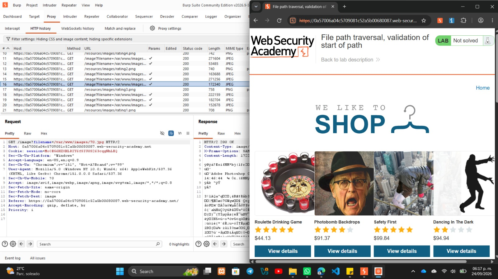
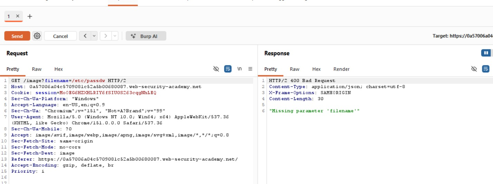
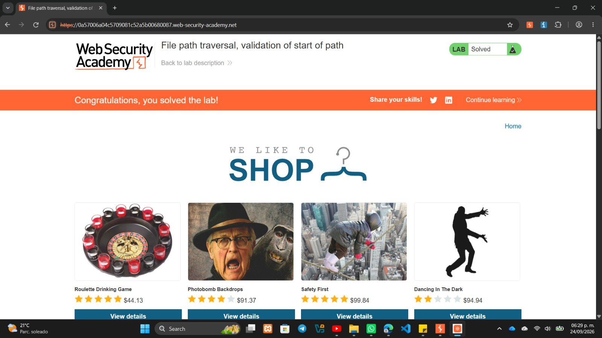

LAB: FILE PATH TRAVERSAL VALIDATION OF START OF PATH
Autor: David Campos Morado - 183511 | Ingeniería en Tecnologías de la Información
Profesor: Servando Lopez Contreras
Objetivo del Laboratorio
Aprovechar una vulnerabilidad de salto de directorio engañando a la validación de la ruta base del servidor, para lograr leer el archivo /etc/passwd y conseguir el "Lab Solved".
Marco Teórico y Fundamentación Técnica
El File Path Traversal sigue catalogado como Broken Access Control en el OWASP Top 10. En este laboratorio, los desarrolladores intentaron una medida de seguridad diferente: forzar a que el parámetro filename incluyera la ruta absoluta completa de la imagen (por ejemplo: /var/www/images/70.jpg).
El código del servidor valida estrictamente que el texto ingresado empiece con /var/www/images/. El error lógico crítico es que el servidor no revisa qué viene después de esa ruta inicial. Esto permite pasar el filtro agregando la ruta base y luego los saltos de directorio.
Impacto en la Tríada CIA:
- Confidencialidad (Crítico): Al engañar al filtro, tenemos acceso directo de lectura a archivos sensibles.
- Integridad (Bajo): El ataque es de solo lectura.
- Disponibilidad (Medio): Posible sobrecarga automatizando peticiones.
Desarrollo Técnico (Procedimiento y Evidencias)
Paso 1: Interceptación del tráfico
Navegando por la tienda, identifiqué que las peticiones GET para cargar las imágenes ya no pedían solo el nombre del archivo, sino la ruta completa (filename=/var/www/images/70.jpg).

Paso 2: Pruebas de seguridad y bloqueos
Intenté quitar la ruta y poner directamente /etc/passwd. El servidor inmediatamente regresó un error 400 Bad Request indicando "Missing parameter 'filename'", confirmando que el servidor exigía iniciar con el directorio base.

Explicación del Payload y Resultados
Lógica del Payload:
- Envío la ruta base
/var/www/images/al inicio. - El filtro de seguridad revisa el texto, ve que empieza correctamente y aprueba la petición.
- Inmediatamente después, agrego
../../../etc/passwd. - El servidor, al procesar la ruta final en el sistema de archivos, entra a la carpeta
images/, pero los saltos../lo obligan a retroceder hasta llegar a la raíz/, accediendo al archivo objetivo.
Resultados Obtenidos:
- El servidor web fue engañado y ejecutó los saltos de directorio contestando con un
HTTP/2 200 OK. - Se expuso en pantalla todo el archivo de usuarios del sistema.
- La plataforma mostró el banner de "Lab Solved".

Estrategias de Mitigación y Conclusión
Para solucionar esta vulnerabilidad, se deben aplicar estas prácticas:
- Validación completa, no solo inicial: Nunca se debe validar únicamente cómo empieza una cadena. La validación debe garantizar que toda la estructura sea segura.
- Canonicalización de rutas: Antes de acceder al archivo, usar funciones nativas (como
realpath) para resolver la ruta absoluta final y verificar que no se escape de la carpeta base. - Uso de Claves e Índices Indirectos: Enviar rutas completas de servidor a través de la URL es una pésima práctica. Se debe usar un ID numérico (
?id=70).
Aprendizaje Técnico: Una validación a medias es igual de peligrosa que no tener validación. El desarrollador confió en que, si la ruta empezaba bien, el resto de la cadena también lo estaría. Las validaciones como startsWith() no sirven para proteger el sistema de archivos.